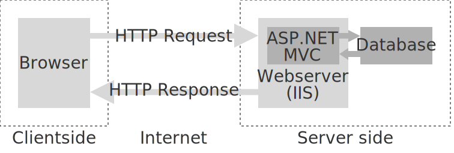

- Verwarring rond de toets: de toets gaat door
- Vragen naar aanleiding van het gastcollege gisteren?
- Wie weet al wat AJAX is?
We versturen/ontvangen alleen nog data bij het:
- klikken op links, of het
- versturen van een formulier
dus er moet een nieuwe (mogelijk dezelfde) pagina worden geladen

Dynamische content
- Wat gebeurt er als je op een like knop klikt?
- Hoe ontvangt een chat-applicatie live de comments?
- Hoe werkt autocompletion bij zoeken?
- Single page applications (SPA)
Hoe laden we plaatjes lazy?
Vanuit Javascript asynchroon HTTP requests doen = AJAX
- Ajax was vroeger een buzzword
In les 8 hebben we dit laten liggen.
Nu: vier voorbeelden
waarom? ((A))jax
static long Optellen(long a, long b) {
for (long i = 0; i < b; i++)
a ++;
return a;
}
static void MoeilijkeBerekening() {
Console.WriteLine(Optellen(100, 1000000));
}
-
In de Main: twee keer MoeilijkeBerekening();
- Lang wachten... (DateTime.Now.Ticks)
-
In de Main: twee keer Task.Run(MoeilijkeBerekening);
- ❓ Programma sluit meteen af?
- üí° De taken worden wel gestart, maar er wordt niet gewacht!
-
In de Main:
var a = Task.Run(MoeilijkeBerekening);
var b = Task.Run(MoeilijkeBerekening);
await a;
await b;
- ❓ The type or namespace name 'await' could not be found?
- üí° Gebruik async en return Task!
- Wat als b klaar is voordat a klaar is?
- Gebruik nooit async void
static void Printen(string letter)
{
for (long i = 0; i < 10000; i++)
Console.Write(letter);
}
static async Task Main(string[] args)
{
var a = Task.Run(() => Printen("."));
var b = Task.Run(() => Printen("x"));
await a;
await b;
}
static async Task<string> MySQLLaden() {
await Task.Delay(2000);
return "MySQL is geladen";
}
static async Task<string> SQLServerLaden() {
await Task.Delay(2000);
return "SQL Server is geladen";
}
static async Task Main(string[] args) {
Task<string> a = MySQLLaden();
Task<string> b = SQLServerLaden();
Console.WriteLine(await a + " en " + await b);
}
static async Task<string> MySQLLaden() {
await Task.Delay(2000);
return "MySQL is geladen";
}
static async Task<string> SQLServerLaden() {
await Task.Delay(2000);
return "SQL Server is geladen";
}
static async Task<string> DatabasesLaden()
{
Task<string> a = MySQLLaden();
Task<string> b = SQLServerLaden();
return await a + " en " + await b;
}
static async Task<string> AndereDingenLaden() {
await Task.Delay(2000);
return "Andere dingen zijn geladen";
}
static async Task<string> Laden() {
Task<string> a = DatabasesLaden();
Task<string> b = AndereDingenLaden();
return await a + "\n" + await b;
}
2 nieuwe keywords:
- async bij de declaratie van de methode:
public async Task<IActionResult> Index() { ... }
- await
-
Bij het opslaan in EF Coreawait _context.SaveChangesAsync();
-
Bij het ophalen uit EF Core
return View(await _context.ToetsResultaat.ToListAsync());
-
Bij het toevoegen van een rol
await _userManager.AddToRoleAsync(user, Input.Rol);
Twee manieren:
-
De XMLHttpRequest (XHR): event-listeners (oud) of JQuery.ajax
var http = new XMLHttpRequest();
http.open('POST', 'meldingen/zoek', true);
http.setRequestHeader('Content-type', 'application/x-www-form-urlencoded');
http.onreadystatechange = function() {
if(http.readyState == 4 && http.status == 200) {
alert(http.responseText);
}
}
http.onerror = function {
alert.log("Fout bij het zoeken!");
}
http.send('term=stoeptegel');
-
De fetch: m.b.v. javascript Promises (nieuw)
fetch("meldingen/zoek", {
method: "POST",
headers: {"Content-Type": "application/x-www-form-urlencoded"},
body: "term=stoeptegel"})
.then(r => {
if (r.status == 200)
throw new Error("Fout");
return r.text();
})
.then(r => alert.log(r))
- Hoe komen we ook al weer aan JQuery?
- Chainen! I.p.v. wat?
Oud:
fetch('/movies')
.then((response) => response.json())
.then((movies) => console.log(movies));
Nieuw:
const response = await fetch('/movies');
const movies = await response.json();
console.log(movies);
- De methode JSON returneert ook een promise, omdat die wacht tot de hele body geladen is.
- ContinueWith
Wordt bepaald door de Content-Type. Voorbeelden:
-
JSON (JavaScript Object Notation)
{
"naam": "John",
"leeft": true,
"leeftijd": 27,
"adres": {
"stad": "Amsterdam",
"land": "Nederland"
},
"telefoonnummers": [
{
"type": "thuis",
"number": "212 555-1234"
},
{
"type": "werk",
"number": "646 555-4567"
}
]
}
-
XML
<root>
<naam>John</naam>
<leeft>true</leeft>
<leeftijd>27</leeftijd>
<adres>
<land>Nederland</land>
<stad>Amsterdam</stad>
</adres>
<telefoonnummers>
<telefoonnummer>
<number>212 555-1234</number>
<type>thuis</type>
</telefoonnummer>
<telefoonnummer>
<number>646 555-4567</number>
<type>werk</type>
</telefoonnummer>
</telefoonnummers>
</root>
Oneindige lus?
HTML kan ook!
new List<Student>()
{
new Student()
{
StudentID = 1,
StudentNaam = "Bob"
}
}
Hoe wordt deze lijst als JSON verstuurd?
- [{"studentID","studentNaam"}:{1,"Bob"}]
- [{1,"Bob"}]
- ["studentID":1,"studentNaam":"Bob"]
- [{"studentID":1,"studentNaam":"Bob"}]
-
❓ Hoe sturen we JSON (ipv HTML) naar JS vanuit C#?
- üí° Return JsonResult en gebruik Json
-
❓ Hoe sturen we JSON (ipv HTML) naar C# vanuit JS?
- üí° Importeer Microsoft.AspNetCore.Mvc.NewtonsoftJson en gebruik .AddNewtonsoftJson() en [FromBody]
- Uittesten met Postman! Waarom?
In de Controller:
[HttpPost]
public JsonResult Like([FromBody] LikeInfo extra)
{
return Json(new LikeInfo { Aantal = 12 + extra.Aantal });
}
In de View:
<script>
fetch("/Home/Like").then(r => r.json()).then(r => console.log(r.aantal));
</script>
-
Een specifiek formaat:
-
JSON: Content-Type=application/json; charset=utf-8
[HttpPost]
public JsonResult Like([FromBody] LikeInfo extra) {
return Json(new LikeInfo { Aantal = 12 + extra.Aantal });
}
-
Tekst: Content-Type=text/plain
public ContentResult Melding() { return Content("Hallo!"); }
-
Content negotiation: de Accept-header wordt bekeken.
services.AddControllers(options => options.RespectBrowserAcceptHeader = true)
Gebruik ObjectResult:
public ActionResult Auteurs() { return Ok(_auteurs.List()); }
Of:
public Auteur EenAuteur() { return _auteurs.First(); }
Je kan ook direct LikeInfo returneren of een ActionResult
Een list returneren kan ook!
-
Wat is een API?
- Application Programming Interface
Vaak wordt JSON gereturneerd.
-
Wanneer heeft je website een API nodig? Bijvoorbeeld als
- je (mogelijk in de toekomst) meerdere frontends wilt hebben (mobiele app?)
- je de data ook voor derde partijen (makkelijk) beschikbaar wilt stellen
-
Zelf kan je ook API's gebruiken (open data)
-
Een GET hoort niets aan te passen
-
Een API documenteren: bijvoorbeeld met Swaggerhub
In principe kan een derde partij altijd, via HTML, bij de data
- Erbij tekenen
- CORS is belanglijk
Scaffolden!
- De startup is veel eenvoudiger: er is geen view meer
Het [ApiController] attribuut zorgt voor model validatie, [FromBody], etc.
-
Demo, daarna controleer met Postman, dan zend de Cookie mee
-
Kan ook: JWT tokens i.p.v. Cookies
Routing is in het bijzonder belangrijk bij API's.
Bijvoorbeeld bij het nesten van resources:
company/{companyid}/department/{departmentid}/employees
-
Conventional routing:
app.UseEndpoints(endpoints =>
{
endpoints.MapControllerRoute(name: "blog",
pattern: "blog/{*article}",
defaults: new { controller = "Blog", action = "Article" });
endpoints.MapControllerRoute(name: "default",
pattern: "{controller=Home}/{action=Index}/{id?}");
});
-
Attribute routing, bijvoorbeeld:
[Route("api/toets/[controller]/[action]")]
[HttpGet]
public ObjectResult GetStudenten ()
{
var studenten = _context.Student.Select(st => new { Id = st.Id, Naam = st.Naam });
return new ObjectResult (studenten);
}
[HttpGet("{id}")]
public ObjectResult GetStudent(int id)
{
var student = _context.Student.Find(id);
var item = new { naam = student.Naam, leeftijd = student.Leeftijd };
return new ObjectResult(item);
}
Wat valt er hier op?
<form name="Studenten" method="post" action="JavaScript: getStudent();">
<div id="studs"></div>
<div id="errorMelding"></div>
<br />
<select name="studentID" id="studentID"
onchange="JavaScript: jQuery('form').submit();" />
<input type="button" id="getButton" value="Haal studenten op“
onclick="getStudenten ();" />
</form>
Voeg ook de JS toe: @section Scripts { <script type="text/javascript" src="~/js/student.js"></script> }
function getStudenten () {
jQuery.ajax({
type: 'GET', url: '/api/Studenten/', dataType: 'json',
success: function (data) {
jQuery.each(data, function (index, element) {
jQuery('#studentID').append(jQuery('<option>', {
value: element.id, text: element.naam
}));
});
},
error: function (XMLHttpReq, status, errorThrown) {
jQuery('#errorMelding').html(errorThrown);
}
});
}
function getStudent () {
jQuery.ajax({
type: 'GET',
url: '/api/Studenten/' + jQuery('#studentID').val(),
dataType: 'json',
success: function (data) {
jQuery('#studs').append(jQuery('<div>', {
text: data.naam + "(" + data.leeftijd + " jaar)"
}));
},
error: function (XMLHttpReq, status, errorThrown) {
jQuery('#errorMelding').html(errorThrown);
}
});
}
- Maak een modelklasse Student met de properties StudentId, Naam en Leeftijd.
- Scaffold een API Controller
- We willen nu 1 pagina waarop we studenten kunnen toevoegen, aanpassen, en verwijderen. (we maken dus een soort single page application voor dit gedeelte van de website)
- Zorg dat na het toevoegen van een student, de lijst wordt vervest (niet de hele pagina!)